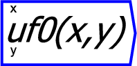

A user defined function is a functioned defined by an algebraic expression. Support for this feature is courtesy of the wonderful exprtk library developed by Arash Partow.
A user defined function has a name, parameters and
an expression. Example expressions are things like x+y
or sin(x). More details of the sorts of expressions possible
can be found in the User Defined Functions
section of the manual.
The parameters are specified as part of the name, so a user defined
function adding x and y would be called useradd(a,y) and the
sin example might be called mysin(x). Functions with up to
two arguments can be wired on the canvas. User defined functions can
call other user defined functions, so specifying more than 2 parameters
can be a useful thing to do.